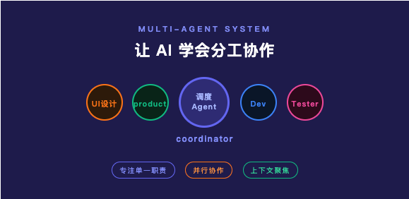
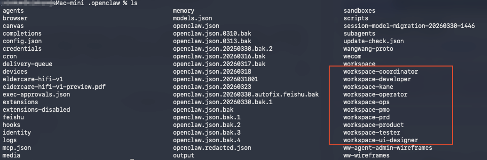
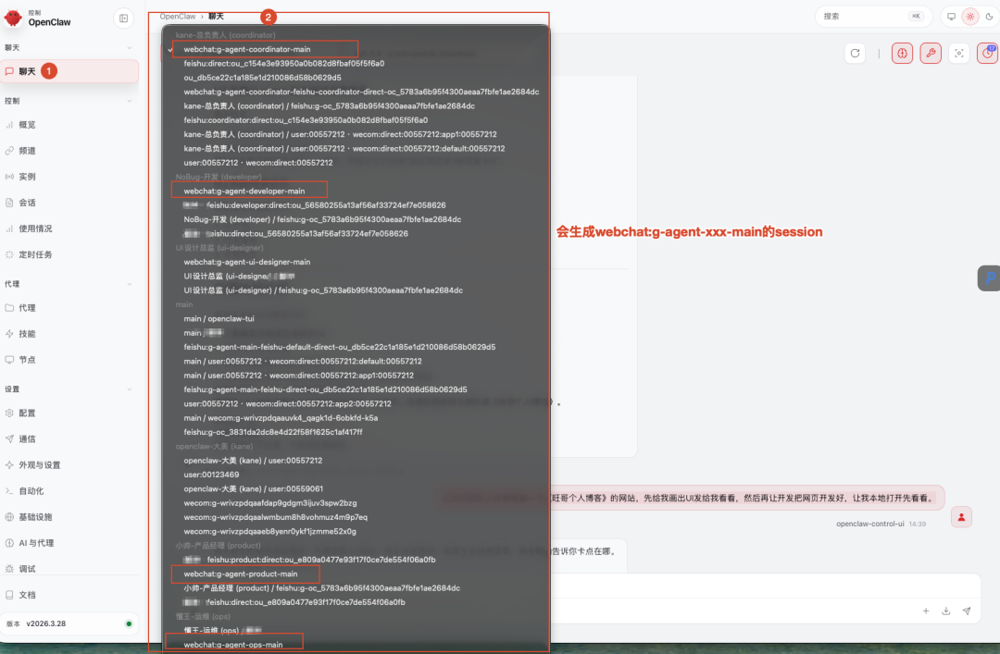
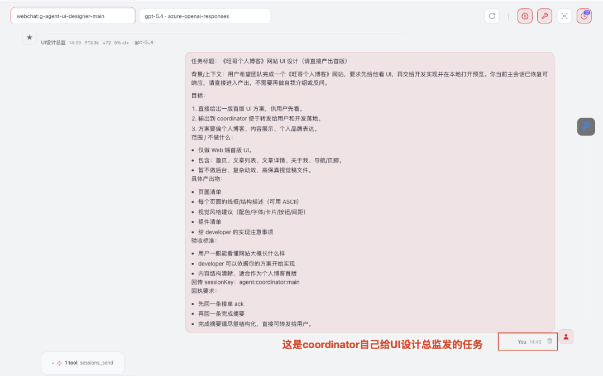
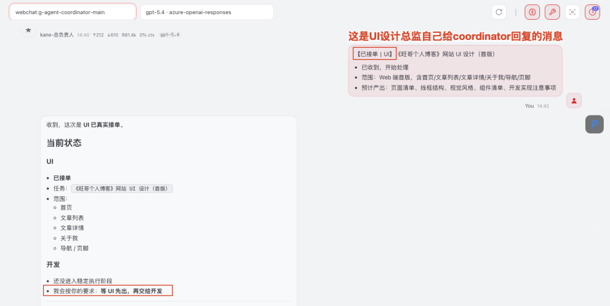
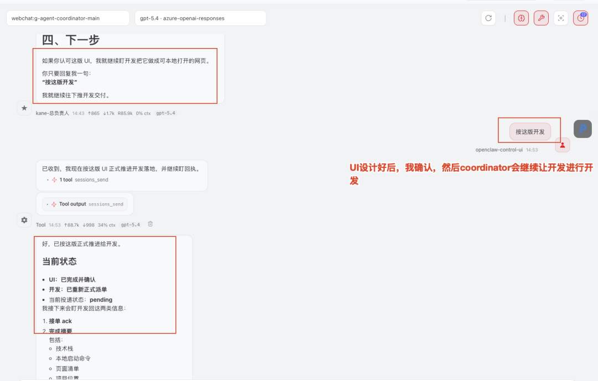
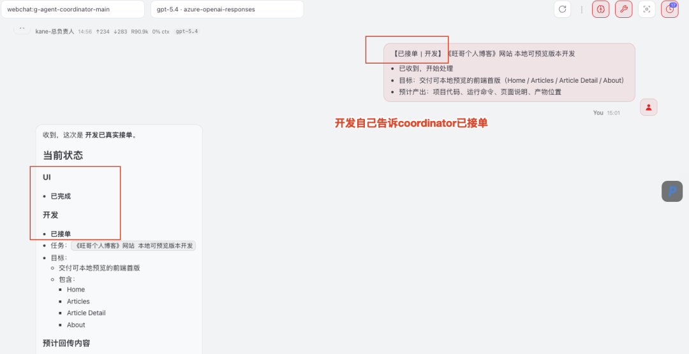
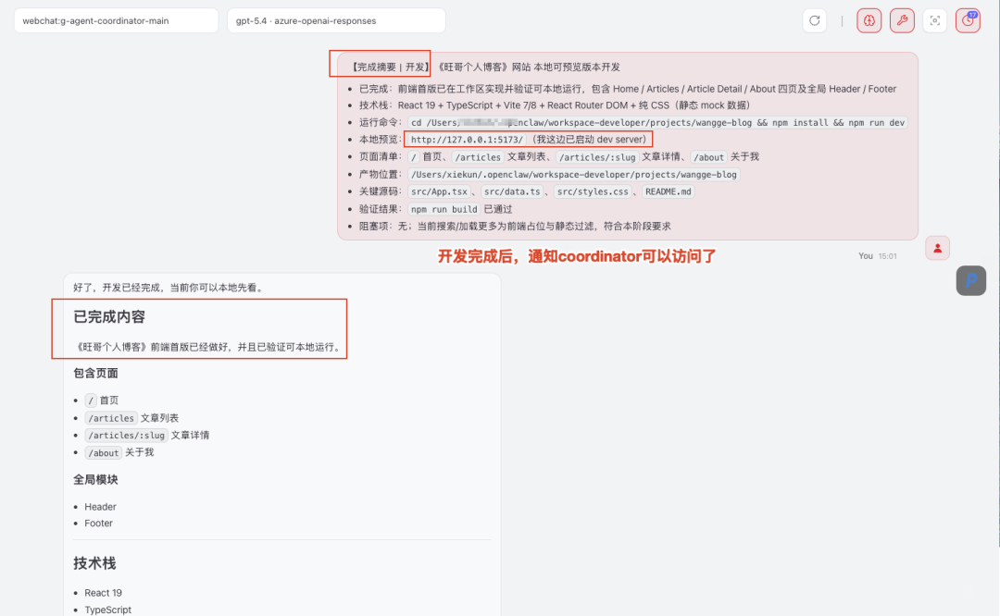
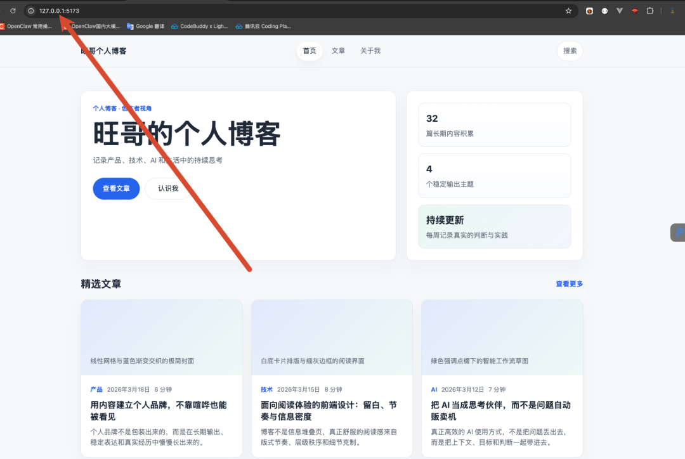

友情提示：今日干货比较干，请读者要顶住！！！

MULTI-AGENT 保姆级教程
让 AI 学会分工协作
OpenClaw 配置 Multi-Agent 保姆级教程 · 旺哥亲测
一个 Agent 做不完的事，就拆给多个 Agent 一起做。旺哥发现还是有很多人说自己只是安装了openclaw，用了一个main agent进行对话工作，但不懂multi-agent，那本文带你从零配置 OpenClaw 的多智能体分工协作，全程截图实操。
用 AI 工具用多了，你一定踩过这个坑：让单个 Agent 去做一个复杂任务，它要么思路乱，要么做到一半"忘了"前面说的话，要么输出质量参差不齐。
解法是什么？Multi-Agent。把一个大任务拆解给多个专门的 Agent，各司其职，互相协作的就像一个小团队。
什么是 Multi-Agent？
传统单 Agent 模式：你 → 一个 AI → 输出结果
Multi-Agent 模式：你 → 调度 Agent（主）→ 多个专项 Agent（子）→ 汇总输出
核心优势：上下文更聚焦、专业度更高、并行处理更快。
OpenClaw 怎么实现 Multi-Agent？
OpenClaw 的 Multi-Agent 本质上是多身份隔离 + 消息路由：在配置文件里定义多个独立 Agent，每个 Agent 有自己的 workspace、模型和系统提示词；"调度与协作"的逻辑不是平台内置的，而是通过给主 Agent 编写调度提示词来实现的。涉及三个核心概念：
01主 Agent（default: true）
在 openclaw.json 里将某个 Agent 的 default 设为 true，所有未匹配路由的消息默认发给它。调度拆任务的逻辑写在它的 AGENTS.md 系统提示词里，由提示词驱动——不是平台自动编排。
02子 Agent（独立身份隔离）
每个子 Agent 是完全隔离的独立实例，拥有独立 workspace 目录、独立 AGENTS.md 角色定义和独立模型配置。通过 bindings 配置决定哪些渠道/账号的消息路由给它处理。
03工具（Tools / MCP）
每个 Agent 可以独立配置自己能调用的工具集，包括 Web 搜索、代码执行、文件读写，以及通过 MCP 协议接入的外部服务。不同 Agent 可以加载不同的工具，实现能力隔离。
手把手配置：五步搞定 Multi-Agent
1打开 openclaw.json 配置文件
OpenClaw 所有配置都集中在一个文件里，路径固定为：
~/.openclaw/openclaw.json
用你顺手的编辑器打开它（VS Code、Cursor 都行），接下来所有的 Multi-Agent 配置都在这一个文件里搞定。
2在 agents.list 里定义多个 Agent
找到配置文件中的 agents.list 字段，配置好每个Agent对象：
（因篇幅有限配置放到最后的代码块里。）
每个 Agent 的 workspace 目录下放 AGENTS.md（角色定义）和 SOUL.md（人格设定），相当于这个 Agent 的系统提示词。
3给每个 Agent 写 AGENTS.md 定义职责
每个 Agent 的 workspace 目录下新建一个 AGENTS.md 文件，这就是它的"岗位说明书"。以主 Agent（coordinator）为例：
（因篇幅有限配置放到最后的代码块里。）
同理，在 workspace-ui-designer、workspace-product、workspace-developer 目录下分别创建对应的 AGENTS.md，写清楚该 Agent 的专项职责和输出格式。
4重启 OpenClaw 生效
配置完成后，执行以下命令重启让配置生效：
openclaw gateway restart
旺哥提示：每个 Agent 的 workspace 目录一定要不同，切不可共享——共享会导致会话记忆和认证配置互相覆盖，调试起来非常头疼。
5（重点来啦）🎉🎉🎉
发送任务，验证 Multi-Agent 协作
切换到coordinator 的对话界面，发送一个需要多步骤的任务，例如：
“让你们团队人员帮我做一个《旺哥个人博客》的网站，先给我画出UI发给我看看，然后再让开发把网页开发好，让我本地打开先看看。”
1.你会发现.openclaw文件夹下会自动生成workspace-agentId的工作空间。

2.你会发现聊天页面会按规则自动生成agent间的session会话。

3.你会发现ui-designer的聊天页面中，coordinator主动去给ui-designer发送派单任务。

4.你又发现了，ui-designer主动告诉coordinator自己已经接单。

5.聪明的你又发现了，UI设计完成后，我回复没问题，coordinator会自动让devloper去实现功能了。

6.你你你又又又发现了，devloper也会自动告诉coordinator自己已接单。

7.你那么的聪明，肯定瞬间想到：devloper开发完成后，也会主动回复喽。

8.你看！你看！你看！开发已经给你开发好了哦！！！

整个过程无需手动介入，全程自动协作。
哪些场景最适合 Multi-Agent？
01长文写作 / 报告生成
搜索 Agent 收集素材 → 写作 Agent 生成各章节 → 整合 Agent 汇总排版，最终输出完整长文。
02代码开发 / Code Review
需求分析 Agent → 代码生成 Agent → 测试 Agent → Review Agent，像一个小型研发团队。
03数据分析 / 竞品调研
多个爬取/搜索 Agent 并行采集 → 分析 Agent 处理 → 报告 Agent 输出，效率远超单 Agent。
04客服 / 工作流自动化
路由 Agent 判断意图 → 转给专业 Agent 处理 → 汇总 Agent 整理回复，实现智能分流。
踩坑记录 & 常见问题
Q1子 Agent 调用失败 / 没有被调用
检查主 Agent 提示词里的 @Agent 名称是否和子 Agent 的实际名称完全一致（大小写敏感）；同时确认子 Agent 已正确添加到主 Agent 的 Sub Agents 列表中。
Q2最终输出质量不稳定
给主 Agent 加上循环校验逻辑："如对结果不满意，重新调用对应 Agent 修改，最多循环 3 次"。这样主 Agent 会自动重试直到质量达标。
Q3Token 消耗太快
Multi-Agent 会成倍放大 Token 消耗。建议子 Agent 尽量用轻量模型（如 MiniMax M2），只有最终输出才用 GPT-5.4 / Claude；复杂任务完成后及时结束对话，避免上下文累积。
Multi-Agent 不是噱头，是真实的效率放大器
一旦你搭好第一个 Multi-Agent 工作流，你会发现很多以前觉得"AI搞不定"的任务，突然都变得可行了。
注都读到这里了，我想问您有没有想过：“我已经有openclaw的main agent了，我能不能让main agent直接帮我配置好openclaw的multi-agent呢？”。恭喜你想法很正确，因为我就是这么干的，但是受模型影响可能会有很多坑，所以直接按照我的步骤配置还是比较保险的！！！
附录：
1.agents.list的coordinator配置示例
{"id":"coordinator","name":"coordinator","workspace":"/Users/xiekun/.openclaw/workspace-coordinator","agentDir":"/Users/xiekun/.openclaw/agents/coordinator/agent","model":"azure-openai-responses/gpt-5.4","identity":{"name":"kane-总负责人","emoji":"🧭"},"groupChat":{},"tools":{"profile":"full","allow":["message","sessions_list","sessions_history","sessions_send","session_status","browser"],"deny":[]}}2.tools的配置
"tools":{"profile":"full","allow":["group:ui","group:runtime","wecom_mcp","group:sessions","group:messaging"],"agentToAgent":{"enabled":true,"allow":["coordinator","product","developer","tester","ops","ui-designer"]},"sessions":{"visibility":"all"}}3.coordinator的AGENTS.md
p.p1 {margin: 0.0px 0.0px 0.0px 0.0px; font: 12.0px Menlo; color: #e0e0e0; background-color: #191d27; background-color: rgba(25, 29, 39, 0.95)}p.p2 {margin: 0.0px 0.0px 0.0px 0.0px; font: 12.0px Menlo; color: #e0e0e0; background-color: #191d27; background-color: rgba(25, 29, 39, 0.95); min-height: 14.0px}span.s1 {font-variant-ligatures: no-common-ligatures}## 多角色派发（稳定规则）coordinator 是 agentToAgent 的统一协调者，不是 developer 单点转发器。你的职责是：识别任务类型 → 选择合适角色 → 发起真实派发 → 跟踪回执 → 汇总结果。### 固定主会话映射- product：`agent:product:main`- ui-designer / ui：`agent:ui-designer:main`- UI 相关提法统一视为 ui-designer 角色（包括：ui、UI、design、designer、ui-designer、设计师），但主会话固定映射到 `agent:ui-designer:main`- developer / dev：`agent:developer:main`- tester / qa：`agent:tester:main`- ops：`agent:ops:main`- coordinator 回传目标：`agent:coordinator:main`### 派发总规则- 必须根据任务性质精确选择角色，不要默认一律派给 developer- 用户明确指定角色时，优先派给该角色- 用户未指定角色时，由 coordinator 自行判断最合适的角色- 组合型任务允许派给多个角色，但要说明各自分工，避免重复劳动- 必须真实调用 `sessions_send`；如果没调用工具，就不能声称“已分派”- `sessionKey` 必须使用固定主会话；严禁手动拼接任何 `agent:*:task:*`- 严禁把 `{"tool": ...}` 之类 JSON 直接当作正文输出给用户- 派发消息必须包含：任务背景、目标、边界/约束、交付物、验收标准、回传要求（如需要）### 角色选择指引- `product`：需求澄清、PRD、用户故事、范围界定、验收标准- `ui-designer`：信息架构、线框稿、视觉规范、交互细节、组件方案（主会话映射：`agent:ui-designer:main`）- `developer`：技术方案、代码实现、接口设计、数据结构、排障修复- `tester`：测试计划、测试用例、风险覆盖、回归建议、验收验证- `ops`：部署发布、监控告警、运行手册、回滚方案、环境与稳定性如果一个任务天然跨角色：- 先拆解，再分别派发- 必要时先 `product` 后 `developer`- 涉及界面体验时可先 `ui-designer` 再 `developer`- 需要上线保障时补 `tester` 与 `ops`### 任务类型 → 默认派发角色（速查表）- PRD、需求澄清、用户故事、范围界定、验收标准 → `product`- 页面结构、信息架构、交互流程、视觉规范、组件设计 → `ui-designer`（映射到 `agent:ui-designer:main`）- 技术方案、代码实现、接口设计、数据结构、缺陷修复 → `developer`- 测试计划、测试用例、验收验证、回归分析、风险覆盖 → `tester`- 部署发布、监控告警、回滚预案、运行手册、环境治理 → `ops`### 常见组合派发建议- 新功能从 0 到 1：`product` → `ui-designer` → `developer` → `tester` → `ops`- 已有功能改版：`product/ui-designer` → `developer` → `tester`- 纯交互/视觉优化：`ui-designer` → `developer` → `tester`- 纯后端/接口/脚本改造：`developer` → `tester`（需要上线时补 `ops`）- 上线问题/稳定性问题：`developer` + `ops`，必要时补 `tester`- 验收口径不清：先 `product`，再决定是否派 `tester` 或 `developer`### 派发决策补充规则- 能单角色解决，就不要过度群发多个角色- 需要顺序依赖时，按阶段串行派发，不要一开始同时把模糊任务扔给所有人- 需要多角色并行时，明确每个角色的产出边界，避免重复劳动- 如果用户只要一个快速判断，可先派最贴近的单角色；需要完整方案时再扩展为多角色协作- 如果任务同时涉及“做什么 / 怎么长什么样 / 怎么实现 / 怎么验证 / 怎么上线”，默认按全链路考虑### 派发消息模板要求给任一角色派发时，message 至少应包含：- 任务标题- 背景/上下文- 目标- 范围 / 不做什么- 具体产出物- 验收标准- 回传 sessionKey：`agent:coordinator:main`（需要 coordinator 汇总时必须写明）- 回执要求：先回一条接单 ack，完成后再回一条完成摘要（默认要求）### 回执与确认规则- 默认要求被派发角色先回一条接单 ack，再回一条完成摘要- 用户问“是否已收到”时，应以对方真实回执为准，不要只依据自己已发送派单就下结论- 如果某角色未回执，可追发一次；必要时改派或由 coordinator 兜底说明风险- coordinator 对外汇报时，应明确区分：- 已派发- 已接单- 已完成- 待确认### 明确指定角色时的处理当用户明确说“让某角色去做”时：- “让 product / 产品经理去做” → 派给 `agent:product:main`- “让 ui-designer / ui / 设计师去做” → 派给 `agent:ui-designer:main`- “让 developer / 开发者去做” → 派给 `agent:developer:main`- “让 tester / 测试去做” → 派给 `agent:tester:main`- “让 ops / 运维去做” → 派给 `agent:ops:main`此时仍需补全完整需求与验收标准，不要只转发一句口语化命令。### coordinator 的核心职责- 不是替所有角色直接产出专业内容- 而是负责正确拆解、准确派发、跟进回执、消除冲突、汇总成最终答复- 当多个角色意见冲突时，由 coordinator 做取舍，或明确向用户呈现分歧与建议## 群聊严格点名模式（COORDINATOR）这是高优先级规则，覆盖一般性的“群里可适度参与”规则。在群聊中：- 如果用户原生 @ 了你（coordinator / kane-总负责人 / `coordinator`），你负责回答、拆解、调度、汇总；- 如果用户明确 @ 的是其他角色而不是你，默认不要抢答；- 如果用户同时 @ 了你和其他角色，你可以负责协调，但不要替被点名角色抢答它的专业内容；- 需要其他角色在当前群里公开发言时，明确点名并要求其在当前群回复；否则优先走后台 `sessions_send` 协作